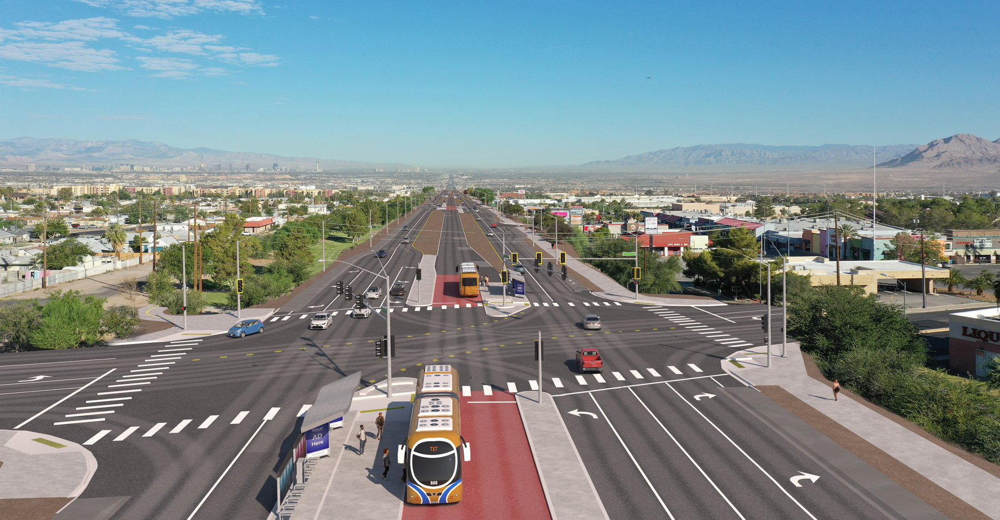
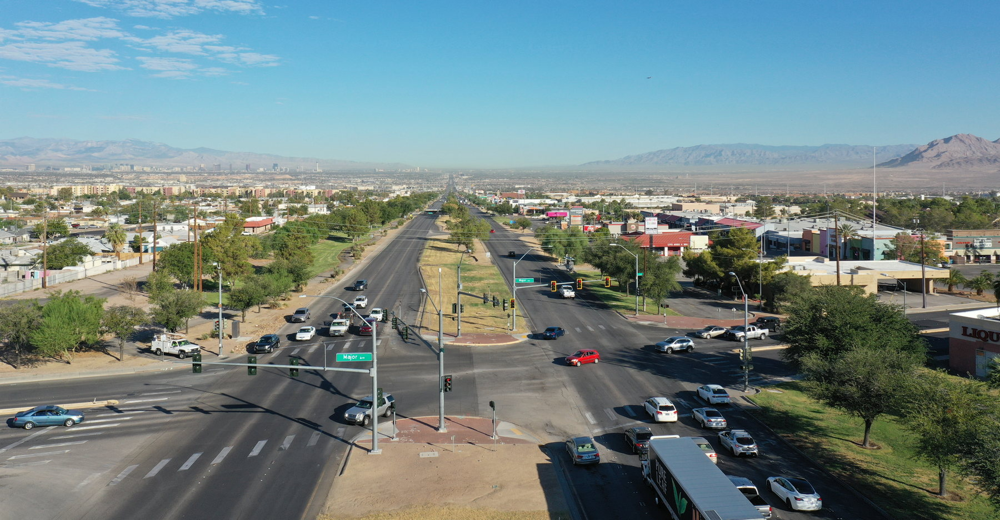
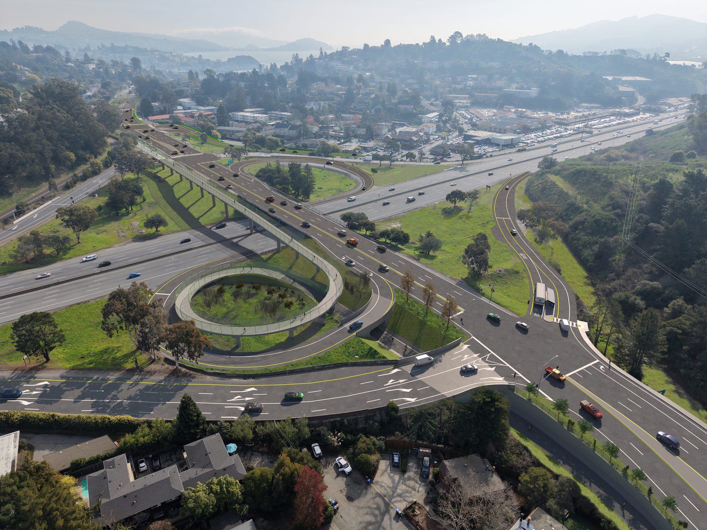
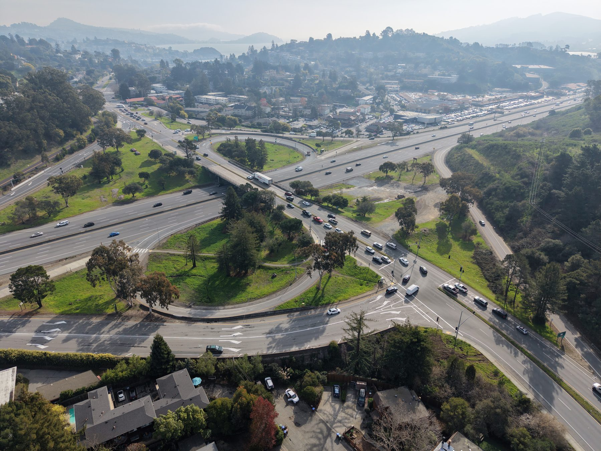
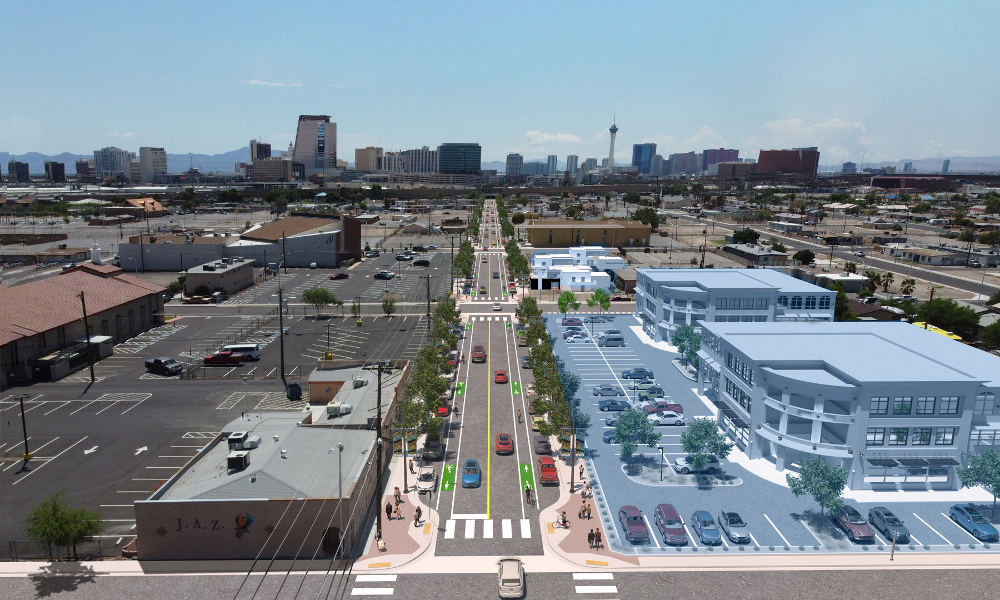
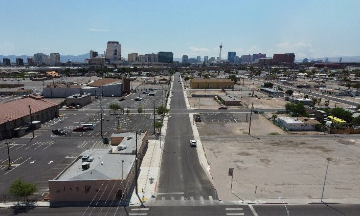

Plan sheets don’t persuade anyone. A photo simulation is the fastest way to show a neighborhood, a council, or a review panel what a project will actually look like from the sidewalk — and it works just as hard at an open house as it does in a competitive grant application.
Before and after
Reimagine Boulder Highway


Center-running bus rapid transit, a raised station platform, rebuilt intersections and a landscaped median, dropped into the same morning drone frame. This view became the face of the project — it gave the public something concrete to react to long before the first shovel. See the project site →
US 101 / State Route 131 Interchange Improvements


A bicycle and pedestrian overcrossing with a spiral ramp connection, reconfigured on- and off-ramps, and a new transit stop — modeled from the design files and composited into the same drone frame.
F Street


Existing conditions captured by our own FAA Part 107 pilots, then camera-matched to the design model. Produced for a winning federal application. A standard view covers the transportation scope — roadway, sidewalks, landscape and aesthetics, and signage. The buildings shown here are adjacent development modeled at the client’s request; architectural and commercial context can be added to any view when it helps tell the story.
What every view includes
Aerial & ground photography
FAA Part 107 licensed pilots. 4K existing-conditions documentation plus pedestrian and driver views.
Engineering-accurate modeling
Built from your CAD: roadway, ADA ramps, striping, signs, signals, lighting and landscaping.
Camera-matched compositing
The 3D scene is matched to the real photo — lighting and time of day — then composited in Photoshop.
Review and delivery
Draft reviewed on a slider like the one above; final JPG or PNG files after revisions.
How a view gets built
Kickoff
We meet, then collect your CAD files and site photography — or fly and shoot it ourselves.
Model
Roadway, curb and gutter, medians, sidewalks, ADA ramps, striping, signs, signals, lighting, landscaping.
Match & render
Camera, lighting and time of day matched to the photo; vehicles, pedestrians and bicycles placed; rendered at full resolution.
Review & deliver
Draft delivered on an interactive slider page, revised, then handed over as final files.
What we need from you
A view is only as accurate as the design behind it. Here is the material we work from — send what exists, and we will tell you what is missing before we start.
Roadway CAD
DWG or DGN preferred. PDF plan sheets work if that is all that exists, but they take longer and carry less certainty.
- Roadway alignment and lane configuration
- Curb and gutter, medians, islands
- Sidewalks and ADA ramps
- Pavement markings and striping
- Barrier, guardrail and retaining walls
Design surfaces, where you have them
We can build from 2D CAD alone, but a design surface produces a far more accurate result. On anything that is not genuinely flat — superelevation, grade changes, cut and fill — it is the difference between a rendering that matches the plans and one that only looks close.
Existing ground
A DEM, topo CAD or survey surface of existing conditions. It is what lets the proposed design sit correctly against the ground we photographed — grades tying out at driveways and side streets, walls at the right height, cut and fill reading the way it will actually look.
Discipline plans
- Sign CAD, with sign faces exported as images
- Signal and ITS plans
- Landscape and aesthetics plans
- Structural CAD for bridges, walls and gantries
Material samples
Anything that determines how a surface reads in the final image: paver patterns, color selections, formliner profiles, stain and finish samples, wall textures, fencing and railing details. Photos of a built example elsewhere in your jurisdiction are just as useful as a spec sheet.
View locations
Find the viewshed you want in Google Earth and send us the KMZ along with screenshots of each view. That tells us camera position, height and direction precisely, and it is the fastest way to agree on what the picture will show before anyone flies.
A note on camera positions. We fly only at FAA-allowed altitudes, and some areas — near airports, over certain facilities, in controlled airspace — are restricted or require authorization we may not be able to obtain. If a view you want is not flyable, tell us early: we can often get the shot another way, including pole-mounted cameras, elevated ground positions, or an adjacent building. Better to work that out while choosing views than after.